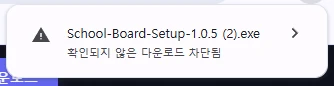
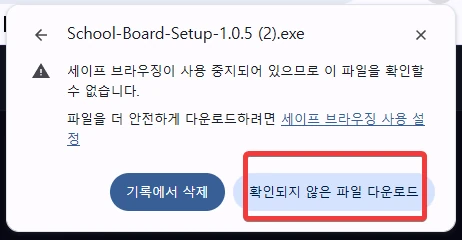
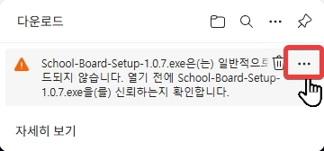
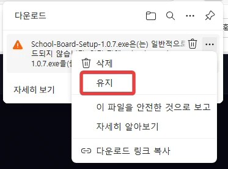
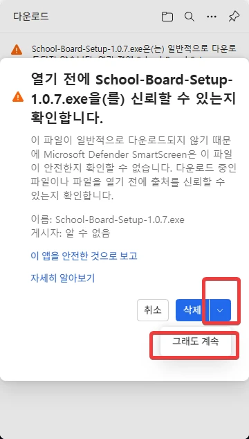
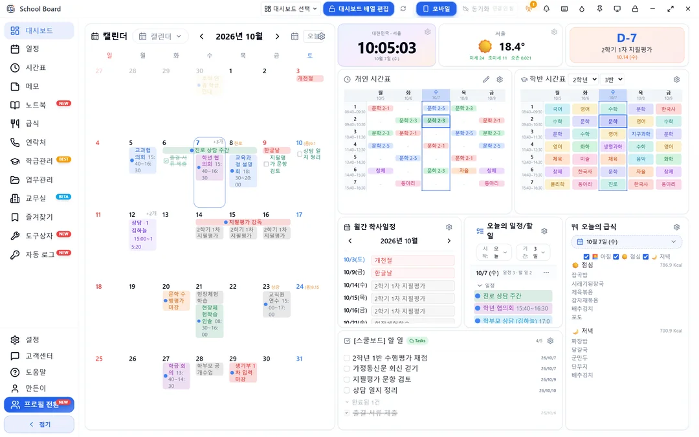
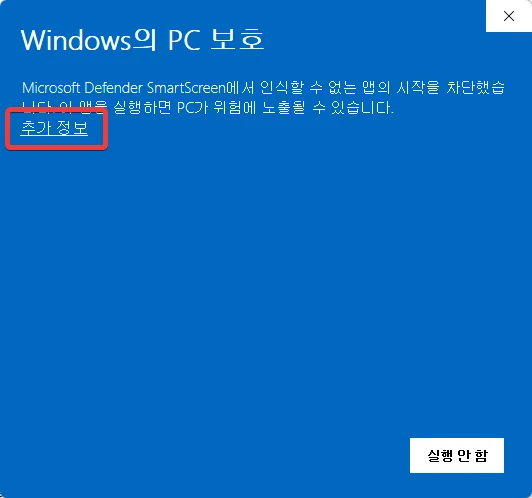
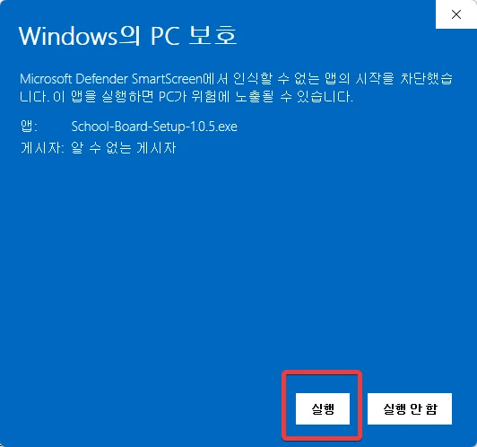

1다운로드할 때 경고가 뜨면
‘확인되지 않은 파일 다운로드’ 창이 뜨면 [확인되지 않은 파일 다운로드]를 눌러 주세요.


‘파일을 안전하게 다운로드하시겠습니까?’ 창이 뜨면 [저장]을 눌러 주세요.




시간표·급식·학급관리부터 생기부와 시험지 작업까지. PC와 휴대폰에서 함께 쓰는 선생님용 무료 업무 앱이에요.
선생님 1만 명이 쓰고 있고, 매일 3,500명 넘게 스쿨보드로 하루를 시작해요.
대시보드는 위젯을 원하는 대로 놓는 바탕화면이에요. 시간표, 급식, 일정, 할 일, D-Day가 저절로 채워집니다.
출근해서 퇴근할 때까지, 시간마다 스쿨보드가 맡는 일이에요.
따로 설치할 필요 없이 도구상자에서 바로 열어요.
휴대폰 브라우저에서 m.schoolboard.cc에 접속해 같은 Google 계정으로 로그인하면 PC의 데이터가 그대로 보여요. 홈 화면에 추가하면 앱처럼 열려요.
휴대폰 카메라로 찍으면
m.schoolboard.cc가 열려요.
어디에 저장되고 언제 밖으로 나가는지 그대로 적었어요. 자세한 내용은 개인정보처리방침에 있어요.
선생님들이 보내 주신 의견으로 계속 고치고 더하고 있어요. 앱은 자동으로 업데이트돼요.
설치부터 기능별 사용법까지 짧은 영상으로 정리했어요.
Windows에 설치하고 학교 이름만 검색하면 준비 끝이에요. 새 버전은 자동으로 업데이트돼요.
아직 코드 서명 전이라 브라우저와 Windows가 경고를 띄울 수 있어요. 보안에는 문제가 없으니 아래 순서대로 진행해 주세요.
‘확인되지 않은 파일 다운로드’ 창이 뜨면 [확인되지 않은 파일 다운로드]를 눌러 주세요.


‘파일을 안전하게 다운로드하시겠습니까?’ 창이 뜨면 [저장]을 눌러 주세요.



[추가 정보]를 누른 뒤 아래에 나타나는 [실행]을 누르면 설치가 시작돼요.


화면 오른쪽 아래 트레이에서 스쿨보드 아이콘을 오른쪽 클릭하고 불투명 안전 모드를 켜 주세요. 흰 배경의 일반 창으로 다시 열려요.
설정 > 일반에서 학교가 제대로 선택돼 있는지, 인터넷이 연결돼 있는지 확인해 주세요. 그래도 안 되면 새로고침(↻) 버튼을 눌러 보세요.
설정 > 데이터 관리 > Google 동기화에서 같은 Google 계정을 연결하면 자동으로 맞춰져요. 인터넷 없이 옮기려면 .board 파일로 내보낸 뒤 다른 컴퓨터에서 불러오세요.
사이드바에서 프로필을 추가하세요. 프로필마다 데이터, 설정, Google 연결이 따로 저장돼요.
새 버전이 나오면 앱이 알아서 받아 설치해요. 설치 파일을 다시 받을 필요는 없어요.
설정 > 정보 > 오류 보고에서 로그 파일을 확인할 수 있어요. 사이드바의 고객센터에 문의를 남겨 주시면 빠르게 도와드릴게요.